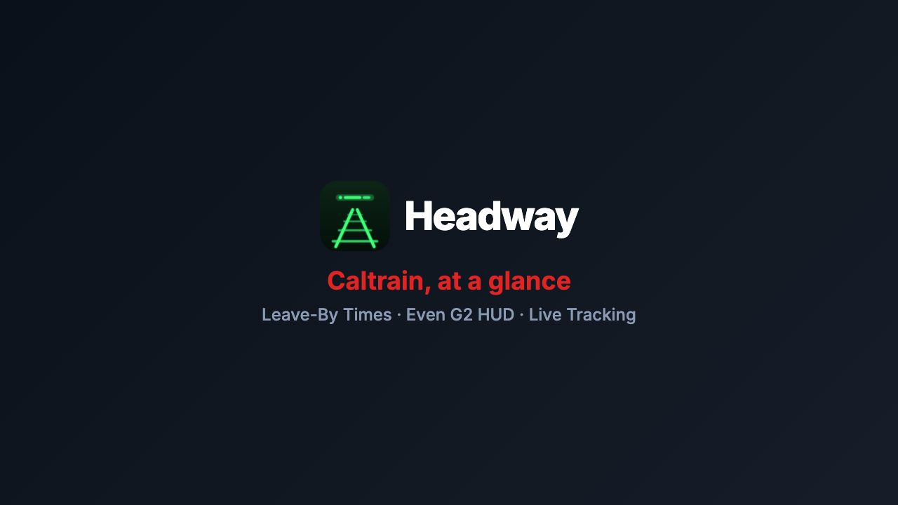
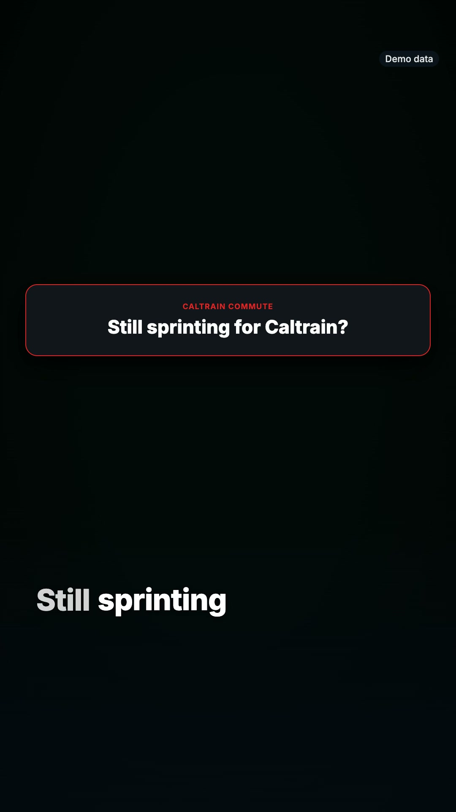

Demo video plan · 2026-11-02
Never guess when to leave: Headway walkthrough video
Headway's product walkthrough video is designed and staged: 1:57 in 16:9 with five YouTube chapters, plus a 26-second 9:16 Short. It teaches a Caltrain rider the four core tasks: setting up a commute pair with leave-by countdowns, glancing at the Even G2 glasses HUD with R1 ring gestures, avoiding delayed trains with express overtaking advice, and tracking rides with Lock Screen Live Activities, Apple Watch, and private ETA sharing links. The animatic composition, voiceover generation (Kokoro-82M), word timestamps (faster-whisper), and recording scripts are in place.
/Volumes/DATA/GitHub/hejitech-apps/branding/promo-videos/public/headway-demo/.What's real
- 100% real app screens: iPhone app (Trains, Commute, Glasses tabs), CatchCard countdown ring, Even G2 glasses monochrome HUD simulator with R1 ring gestures, Lock Screen Dynamic Island Live Activity, and the web-based
/eta/:tokenshared link. - Real timetable & GTFS-Realtime engine: Delays (+4m, +14m) and live predictions flow through
@headway/coreand the Worker snapshot. - Real APNs time-sensitive push notifications: Simulator push payloads generated with real alert engine logic (leave-now, better-train express overtake, and 5-minute arrival heads-up).
Key differences from the launch promo
- Walkthrough vs Promo: The launch promo (30 s) was a fast-paced character vignette (Lin and Max). This walkthrough (1:57) puts the real app on screen ≥ 70% of the time, explaining step-by-step how each feature works.
- Lin's voice continues: We use Kokoro's
af_heart(the same voice profile chosen for Lin inheadway-launch), maintaining brand vocal continuity. - Full feature breadth: Highlights Leave-By walk countdowns, R1 ring interactions, the Express overtake calculation, and the private web ETA sharing link that weren't in the 30-second teaser.
| If you want to redo | What to do |
|---|---|
| A line of the script | Edit in your notes: re-run headway-demo-vo.py --only <id> and headway-demo-words.py. |
| The narration voice | Pass any Kokoro voice (af_bella, af_nicole, af_sky, am_echo): takes < 15 seconds to regenerate all lines. |
| A Flow backdrop or music | Drop the new file into public/headway-demo/ and update media.md. |
| Re-record a simulator clip | Run scripts/headway-demo-record.mjs [glasses|phone] with local stack running. |
The edit: two cuts to review
headway-demo.mp4
headway-demo-short.mp4
| Full walkthrough | headway-demo (1920×1080, 1:54 duration, 3,408 frames at 30 fps) |
|---|---|
| Short format | headway-demo-short (1080×1920 vertical, 23 seconds duration, 681 frames) |
| YouTube thumbnail | headway-demo-thumb (1280×720 still composition) |
| Chapters | 0:00 Intro 0:10 1. Commute & leave-by times 0:33 2. Even G2 glasses & R1 ring 0:58 3. Wait for the Express 1:21 4. Track ride & Share ETA 1:46 Recap |
| Pace & Camera | Calm tutorial pace (~140 wpm), each UI action held for ≥ 1.2 s after completion. Smooth spring zooms (1.4–2.0×) focused on touched elements, spotlight on targets, ripple clicks. |
| Transitions | Cross-zooms into device stages, subtle 3D tilt flattening before interaction, seamless chapter dissolves with Flow backdrops. |
| Audio & Loudness | Kokoro af_heart voiceover, acoustic tech background music ducked smoothly under voice. Loudness normalized with two-pass ffmpeg loudnorm (−14.0 LUFS, true peak −1.5 dB). |
Chapters and script
Who this video is for: Bay Area Caltrain commuters and tech workers who want frictionless transit awareness. Four focused chapters show the journey from waking up to arriving at work.
Chapter 0 · Intro (0:00 – 0:10)
Hook the viewer: platform sprints are stressful and unnecessary when live predictions and leave times are right in your vision.
Chapter 1 · Commute & leave-by times (0:10 – 0:33)
Save morning and evening station pairs. Show the live departure board and the CatchCard countdown ring that removes mental transit math.
Chapter 2 · Even G2 glasses & R1 ring (0:33 – 0:58)
Pair with a 6-digit code. Experience the crisp 9-line green HUD and intuitive R1 ring controls: swipe down to browse, tap to flip direction, and hold for the menu.
Chapter 3 · Wait for the Express (0:58 – 1:21)
When Local 113 is delayed by 14 minutes, Headway notices that Express 511 arrives 4 minutes earlier. Shows the InsightBanner, HUD footer tip, and time-sensitive push alert.
Chapter 4 · Track ride & Share ETA (1:21 – 1:46)
Swipe right to track. Dynamic Island Live Activity displays station progress, Apple Watch complication shows platform countdown, private /eta/:token link shares live map with family, and a 5-minute arrival tap alerts you before your stop.
Recap & End Card (1:46 – 1:57)
The Short (9:16 vertical, 26 seconds)
A fast-paced single-task short demonstrating the leave-by countdown, express overtake advice, and Live Activity arrival tap.
Look and feel
A refined SaaS product film aesthetic: clean hardware floating over rich, warm natural backdrops. Contrasts morning daylight with the sleek high-tech green HUD.
| Typography | Inter for UI and title labels, JetBrains Mono for times, train IDs, and HUD lines |
|---|---|
| Device Frames | iPhone 17 Pro frame (subtle shadow), Apple Watch Ultra wrist frame, Even G2 HUD container (floating with 3D tilt) |
| Transitions | Cross-zoom into device screens; subtle camera drift during holds; match cuts between phone alert and HUD footer |
| Captions | KineticCaption bottom band; spoken word highlights white on black with red accent marker |
| What never appears | No AI-generated UI, no mocked features that don't exist in code, no fake trains, no personal user data |
Flow art prompts
Prompts for Google Flow. All prompts follow the rule: cinematic 35mm photography, subtle natural lighting, high production value, no logos, no text. Download each file into branding/promo-videos/public/headway-demo/.
Flow Generation Settings
Model: Google Flow (Video / Frames). Aspect ratio: 16:9 (1920×1080) for backdrops and opener; 2K still image for end card. Camera motion: gentle slow push-in or subtle horizontal drift.
A1 · Platform at dusk
Cinematic wide shot of a commuter standing on a sleek modern train platform in San Francisco at dusk, electric Caltrain approaching in the background with glowing headlights, high production value, cinematic 35mm film still, warm golden-hour rim light and cool twilight shadows, no logos, no text
B1 · Morning desk & coffee
Minimalist modern desk aesthetic, warm natural morning light streaming across an oak wood surface, coffee cup with subtle rising steam, gentle depth of field, architectural interior photography, serene atmosphere, no logos, no text
B2 · Slate surface with emerald HUD glow
Moody high-tech ambient backdrop, dark slate stone textures illuminated by subtle futuristic neon emerald-green light accents and glowing circuit traces, macro bokeh, clean product design photography, no logos, no text
B3 · Rail tracks night timelapse
Night timelapse of railway tracks curving through the San Francisco Peninsula, blurred streaks of red and white light from passing express trains, cinematic motion blur, deep navy blue and crimson tones, no logos, no text
B4 · Train window reflections
Inside a quiet, illuminated modern passenger train carriage looking out the window at passing city lights at twilight, cinematic reflections on the glass, soft interior illumination, peaceful travel mood, no logos, no text
A2 · Aerial suburban sunrise
Aerial view of a Caltrain electric train gliding smoothly through green suburban California landscape at sunrise, golden sunlight catching the silver roof, smooth gliding camera motion, cinematic drone footage, no logos, no text
A3 · Terminal morning platform
Dawn breaking over San Francisco 4th & King terminal platform, soft pastel sky with rose and gold hues, clean empty platform ready for the morning commute, peaceful and optimistic, no logos, no text
Recordings and screenshots
All screen recordings are generated entirely on the local development stack with deterministic demo data, fixed 9:41 status bar, and companion JSON event logs.
| Clip | Resolution | Duration | Description |
|---|---|---|---|
rec-1-commute.mp4 | 1179×2556 | 18.0 s | iPhone: Commute tab setup, Trains live departure list, CatchCard leave-by countdown ring |
rec-2-glasses.mp4 | 1728×864 | 15.0 s | Even Hub Simulator: 9-line green HUD, R1 ring swipe down, tap to flip, hold for menu |
rec-3-overtake.mp4 | 1179×2556 | 18.0 s | iPhone: Local 113 delayed (+14m), InsightBanner overtake advice, time-sensitive APNs push |
rec-4-track.mp4 | 1179×2556 | 20.0 s | iPhone & Watch: swipe to track 511, Dynamic Island Live Activity, Share ETA link, 5m arrival tap |
How to execute screen recordings locally
# 1. Start local Supabase and Headway Worker supabase start npm run dev:worker -w @headway/web # 2. Stage seed data & run recorders node branding/promo-videos/scripts/headway-demo-record.mjs stage node branding/promo-videos/scripts/headway-demo-record.mjs glasses node branding/promo-videos/scripts/headway-demo-record.mjs phone # 3. Always restore seed settings afterwards node branding/promo-videos/scripts/headway-demo-record.mjs restore
Voiceover and music
Narration is pre-rendered with Kokoro-82M (Apache 2.0) locally at 24 kHz mono. The selected voice is af_heart (Lin's voice from headway-launch), with exact word timings extracted via faster-whisper.
| Narration Model | Kokoro-82M (hexgrad/Kokoro-82M) via local Python venv |
|---|---|
| Primary Voice | af_heart (warm, articulate, tech-commuter tone at 1.05× speed) |
| Alternative Takes | af_bella, af_nicole, af_sky, am_echo (generated via headway-demo-vo.py) |
| Timing Alignment | faster-whisper (small.en) with custom phoneme dictionary mappings |
Flow Music prompt (for owner)
Warm and modern tech-acoustic groove, 102 BPM, 4/4, clean rhythmic acoustic guitar and muted marimba pulse, subtle warm bassline, light electronic percussion, airy and optimistic, open mids leaving room for a clear voiceover, clean resolving ending at 115 seconds
YouTube upload kit
Ready to paste when uploading both videos to the official HEJI TECH YouTube channel.
Full Walkthrough (16:9, Public)
How to never miss Caltrain: Headway walkthrough (2 minutes)
Headway gives you Caltrain departures, live delays, exact leave-by countdowns, and Even G2 glasses HUD display with R1 smart ring gestures. Chapters: 0:00 Intro 0:10 1. Commute & leave-by times 0:33 2. Even G2 glasses & R1 ring 0:58 3. Wait for the Express 1:21 4. Track ride & Share ETA 1:46 Recap App & Docs: https://headway.hejitech.workers.dev Decisions & Architecture: https://github.com/tianhaoz95/hejitech-apps/tree/main/projects/headway Disclaimer: Train departures, delays, and notifications shown are demo data on the local developer stack. Voiceover generated locally with Kokoro-82M. Atmospheric backdrops created with Google Flow.
Caltrain, transit, Even G2, smart glasses, R1 ring, Apple Watch, Live Activity, commute, San Francisco, Silicon Valley

headway-demo-thumbnail.jpg

| Video file | headway-demo.mp4 |
|---|---|
| Subtitles | headway-demo.srt (22 cues) |
| Chapters | In the description above. headway-demo-chapters.txt |
| Playlist | The existing Headway playlist. |
Short (9:16, Public Short)
Still sprinting for Caltrain? Commute smarter with Headway #shorts
Never do transit mental math on the platform again. Headway calculates your exact walking buffer, tells you when an express beats a delayed local, and taps your wrist 5 minutes before your stop. Get Headway: https://headway.hejitech.workers.dev

headway-demo-short-thumbnail.jpg

| Video file | headway-demo-short.mp4 |
|---|---|
| Format | Upload as a Short (≤ 60 s, 9:16 vertical). |
Steps, checklist, and risks
- Chapters and script drafted, timed, and reviewed
- Voiceover lines generated with Kokoro-82M (af_heart)
- Word timestamps extracted with faster-whisper into voiceover.ts
- Animatic composition compiled and linted in Remotion
- Subtitles (.srt) and YouTube chapter markers generated
- Owner generates 7 Flow art backdrops and Flow Music track
- Screen recordings executed with local stack and simulator
- Render full video & short at 30 fps with loudnorm (-14 LUFS)
- Upload to YouTube and embed in projects/headway/docs/index.md
Risks & Mitigations
| Risk | Mitigation |
|---|---|
| Unknown words in Kokoro dictionary crash macOS espeak fallback | Phonetic spellings used ("Cal train", "E T A", "R one", "five eleven") and verified without fallback crash. |
| GTFS-RT snapshot expires after 10 minutes | Recording script stages snapshot immediately before recording and verifies feed timestamp. |
| App Store Connect / TestFlight privacy restrictions | All recordings run on local simulator with zero real PII or live location tracking. |